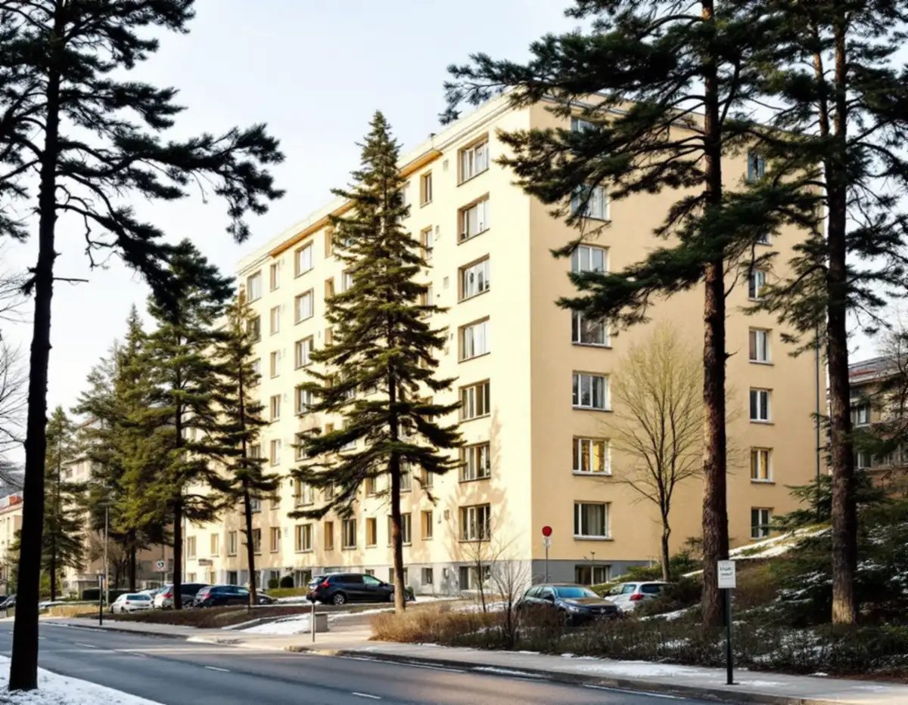
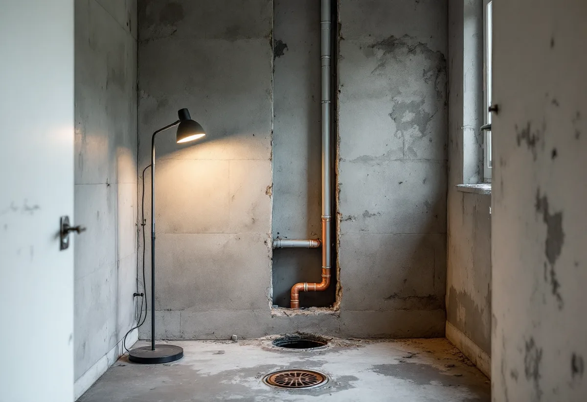

Platsbesök
Vi ser badrummet och frågar om föreningen har ett stambyte planerat.
Nästan sju av tio bostäder på Kungsholmen är bostadsrätter. Därför är det ofta föreningen som sätter ramarna för ett nytt badrum, och ibland är det föreningens stambyte som avgör när det blir av. Geal Entreprenad AB river, bygger tätskikt och ytskikt och samordnar VVS och el i lägenheten, med gratis platsbesök och skriftligt kostnadsförslag. Här går vi igenom vad stämman beslutar om och vad som är ditt.

Stadens områdesfakta för 2025 räknar 44 554 bostäder i Kungsholmens stadsdelsområde. Av dem är 30 598 bostadsrätter och bara 337 ligger i småhus. I Kristineberg är 3 243 av 4 598 bostäder bostadsrätter, i Fredhäll 2 219 av 3 830.
Enligt Stadsmuseets Stockholms Spår om Kristineberg köpte staden Kristineberg och Fredhäll 1920, och de flesta bostadshusen byggdes under 1930-talet efter stadsplanetävlingar 1927 och 1929. Tjockhus med en bredd på 15–16 meter blev den dominerande hustypen. Efter stadens tävling om billiga bostäder 1932 byggdes de första smalhusen på prov längs Onkel Adams väg, med Sven Markelius som arkitekt. Även Stadshagsberget fick sitt första större hyreshusområde under 30-talet.
Ett badrum i ett hus från den tiden kan ha byggts om flera gånger sedan dess, och det som syns säger lite om rören bakom. Vi börjar därför med att ta reda på när badrummet senast gjordes om och vad föreningen planerar för huset, innan något ritas.

Ett stambyte är föreningens ombyggnad, inte din. Enligt bostadsrättslagen 9 kap. 15 § ska beslut som innebär väsentliga förändringar av föreningens hus fattas på en föreningsstämma, om inte stadgarna säger något annat. Innebär beslutet att din lägenhet förändras på grund av en om- eller tillbyggnad ska du enligt 16 § ha gått med på det. Säger du nej blir beslutet ändå giltigt om minst två tredjedelar av de röstande har gått med på det och hyresnämnden godkänner det.
Hyresnämnden ska enligt 17 § godkänna beslutet om förändringen är angelägen, syftet inte skäligen kan nås på något annat sätt och beslutet inte är oskäligt mot dig. Under arbetet har föreningens företrädare enligt 7 kap. 13 § rätt att komma in i lägenheten för att utföra arbete som föreningen svarar för, och föreningen ska se till att du inte drabbas av större olägenhet än nödvändigt.
Vem som svarar för stammarna framgår av 7 kap. 12 §. Du svarar inte för reparationer av ledningar för avlopp, värme, gas, el och vatten som föreningen har försett lägenheten med och som tjänar fler än en lägenhet, och detsamma gäller ventilationskanaler. Resten av lägenheten håller du själv i gott skick, om inte stadgarna säger något annat.
Enligt bostadsrättslagen 7 kap. 7 § får du inte utan styrelsens tillstånd göra ingrepp i bärande konstruktion, installera eller ändra ledningar för avlopp, värme, gas eller vatten eller ändra ventilationen. Styrelsen får säga nej bara om åtgärden är till påtaglig skada eller olägenhet för föreningen, och den som är missnöjd kan begära att hyresnämnden prövar frågan.
Vill du ha något annat än föreningens standard, till exempel flytta toaletten eller duschen, är det alltså en ändring av avloppsledningar som styrelsen ska godkänna. Stockholms stad skriver på sidan om att flytta kök eller badrum att det inte krävs bygglov, men att en ny VA-stam i nytt schakt, ändringar i bärande konstruktion eller brandskydd och väsentliga ändringar av ventilationen kräver anmälan och startbesked.
Det enklaste är ofta att planera badrummet medan föreningens entreprenör ändå har rummet öppet. Fråga styrelsen vad entreprenaden omfattar – stammar, golvbrunn, tätskikt eller hela ytskiktet – och vad som blir ditt att beställa.
Enligt GVK om gamla golvbrunnar ska en golvbrunn som är äldre än 1990 bytas ut för att följa branschreglerna, och regeln nämns särskilt vid stambyte, påkostad renovering och efter omfattande vattenskada. Är huset från 1930-talet och badrummet inte renoverat sedan dess är frågan enkel. Har det byggts om går vi efter fabrikat och ålder, och går åldern inte att avgöra rekommenderar GVK byte.
Ska golv och väggar i hallen göras om samtidigt finns mer under golvläggning och målare. Hur ett tätskikt byggs och vilka intyg du ska få står på sidan om badrumsrenovering.
Vi ser badrummet och frågar om föreningen har ett stambyte planerat.
Vi går igenom vad föreningen gör och vad som blir ditt.
Du får en beskrivning och ritning att lämna in för tillstånd.
Arbete och material står var för sig, liksom det föreningen redan står för.
Rummet byggs upp med fall mot brunnen, och installatörerna drar rör och el.
Du får intyg och produktblad att spara, och styrelsen får det den har begärt.
Rotavdraget är 30 procent av arbetskostnaden, högst 50 000 kr per person och år och högst 75 000 kr tillsammans med rutavdrag. Material och resor ger inget avdrag.
I en bostadsrätt gäller avdraget enligt Skatteverket bara arbete innanför lägenhetens tak, väggar och golv som du ansvarar för enligt föreningens stadgar. Kakel och klinker, duschar, badkar och handfat och att byta golvbrunn ger avdrag. Att flytta golvbrunnen, flytta eller byta avloppsrör och stambyten ger det inte. Din egen del av badrummet kan alltså ge avdrag även när föreningens stambyte inte gör det. Geal drar avdraget direkt på fakturan.
Vad föreningens entreprenad redan omfattar, om toalett eller dusch flyttas och vilka ytskikt du väljer väger tyngst. Platsbesöket är gratis, och du får ett skriftligt kostnadsförslag innan något beställs.
Tätskikt, golvbrunn, el, VVS och intyg.
Badrumsrenovering i Stockholm →Kök i lägenhet och villa.
Köksrenovering →Nya golv och slipning.
Golvläggning →Föreningens stambyte.
Byggföretag på Kungsholmen →Slätputs på funkishus, lagad utan synliga skarvar.
Fasadrenovering på Kungsholmen →Stenhusen, funkishusen och bygglovet.
Fönsterbyte på Kungsholmen →Fönstret i bostadsrätten, insida och beslag.
Fönsterrenovering på Kungsholmen →Stegljud, golvval och styrelsens tillstånd.
Golvläggare på Kungsholmen →Slipa och lacka golvet i bostadsrätten.
Golvslipning på Kungsholmen →Fläkten, kanalen och föreningen.
Köksrenovering på Kungsholmen →Funkislägenheter, stadgar och ROT i bostadsrätten.
Målare på Kungsholmen →Ny tapet på putsade lägenhetsväggar.
Tapetsering på Kungsholmen →Hela lägenheten från golv till tak.
Totalrenovering på Kungsholmen →